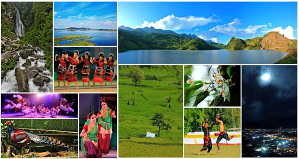

Manipur is a state in northeastern India, with the city of Imphal
as its capital. It is bounded by the Indian states of Nagaland to
the north; Mizoram and Myanmar to the south; Assam to the west;
Myanmar lies to its east.
Capital: Imphal
Formation: 21 January 1972
Chief minister: N. Biren Singh
Population: 27.2 lakhs (2011)
Governor: Najma Heptulla

Climate
Lying 790 meters above sea level, Manipur is wedged among hills on all sides.
This northeastern corner of India enjoys a generally amiable climate, though
the winters can be chilly. The maximum temperature in the summer months is
32 C (90 F). The coldest month is January, and the warmest July.
Best time to visit
The best season to visit Imphal is the winters and the onset
of summers. The favourable months to visit the place are between
September to April. The climate remains
pleasant during these months offering tourists the best
holiday experience. November to February is the winter season in Imphal.
How can you reach Manipur?
Imphal is connected with all parts of India by air, railways and road.
The airport is 8 km away from the city and can be reached by taking a
cab. Kohima is the nearest railway station which connects other railway
stations in the region like Dibrugarh and Guwahati.
Click to go Back to Home